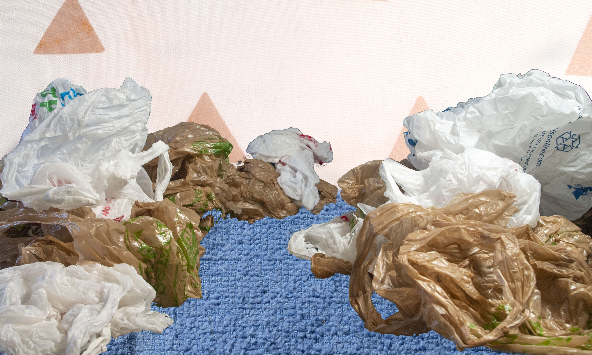

Bags Canyon is a massive land form spanning almost all of southern Downstairs. It’s sides are made of thousands of plastic bags wrapped in and around each other. People have ventured to explore the caves on the sides of the canyon and have been lost forever in these maze-like structures. Much of the canyon has been mined for use in garbage disposal across the rest of the world.